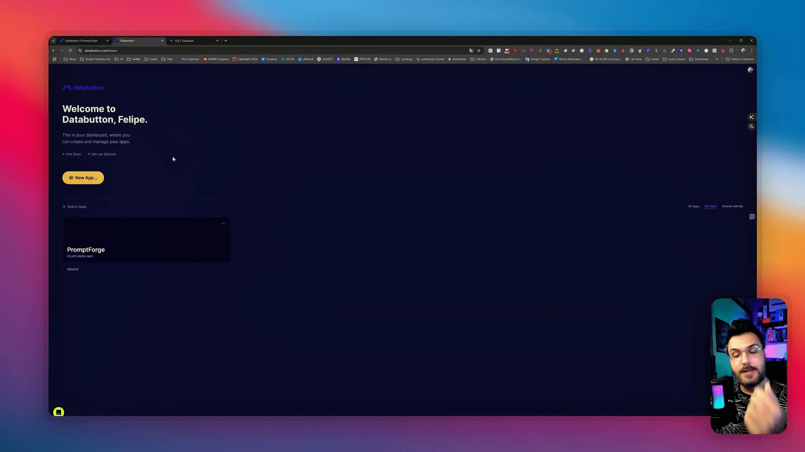
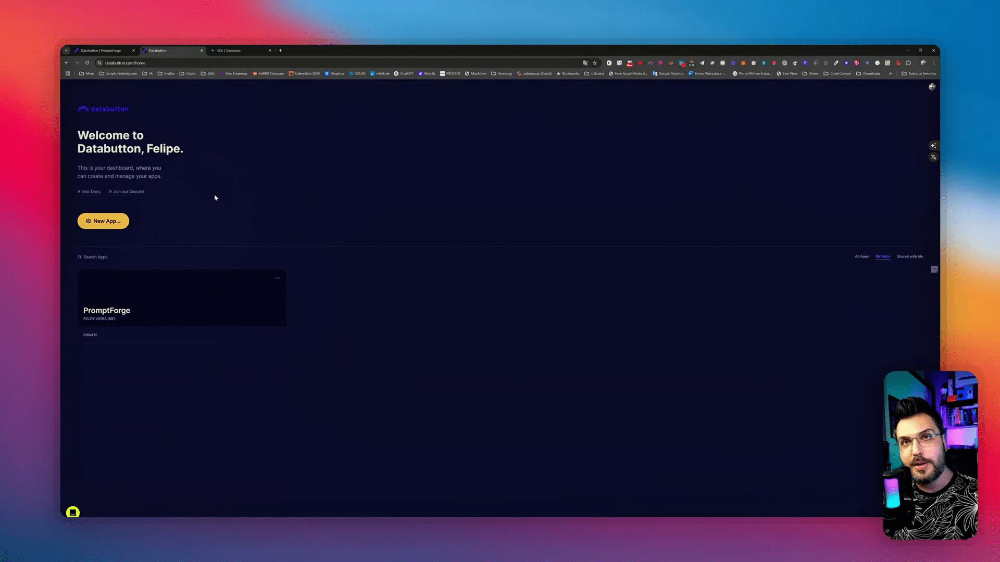
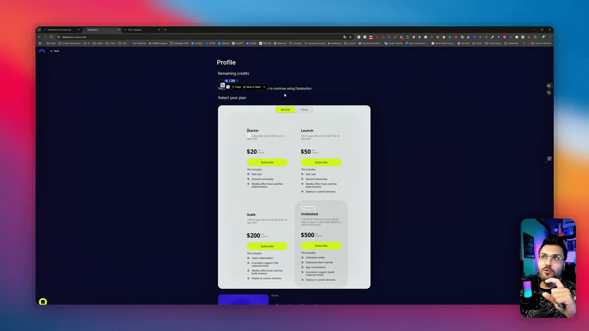
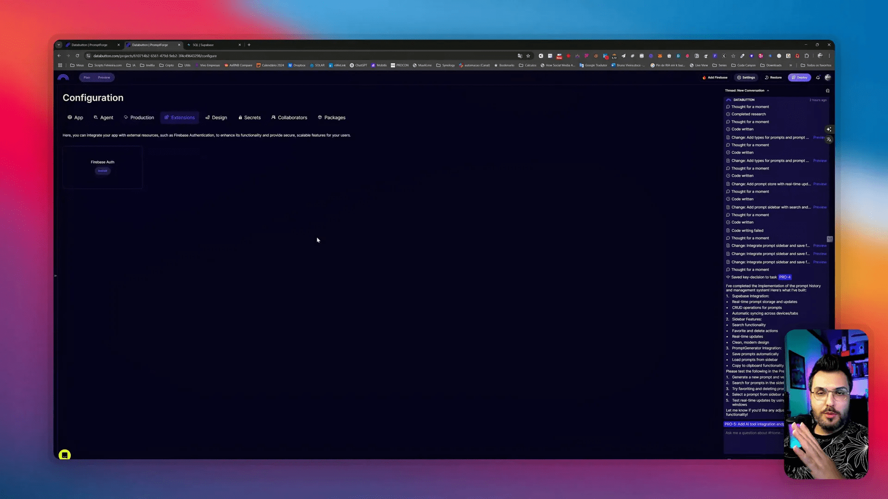
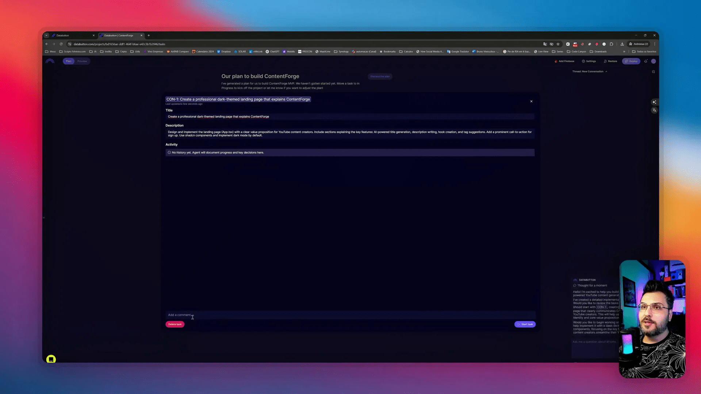
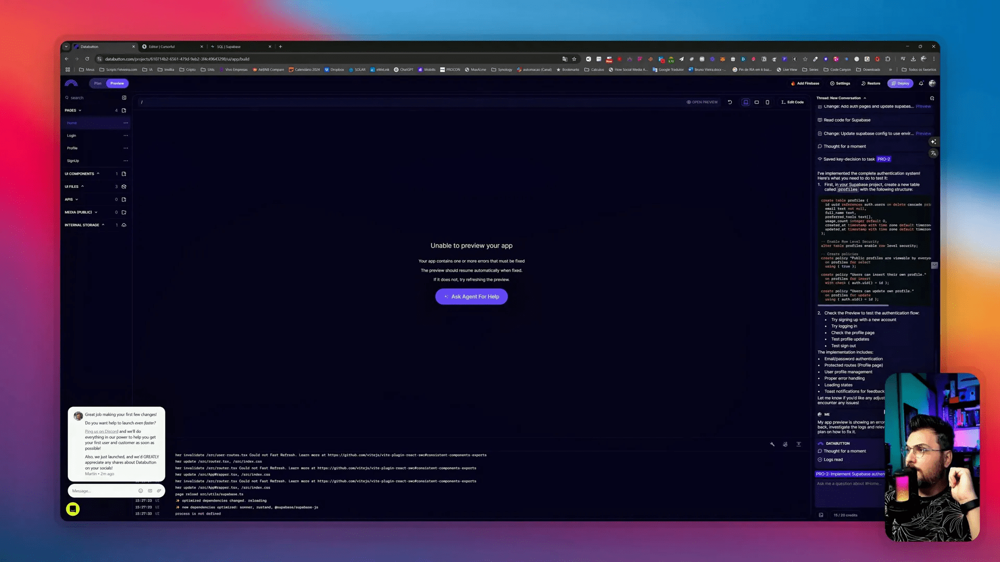
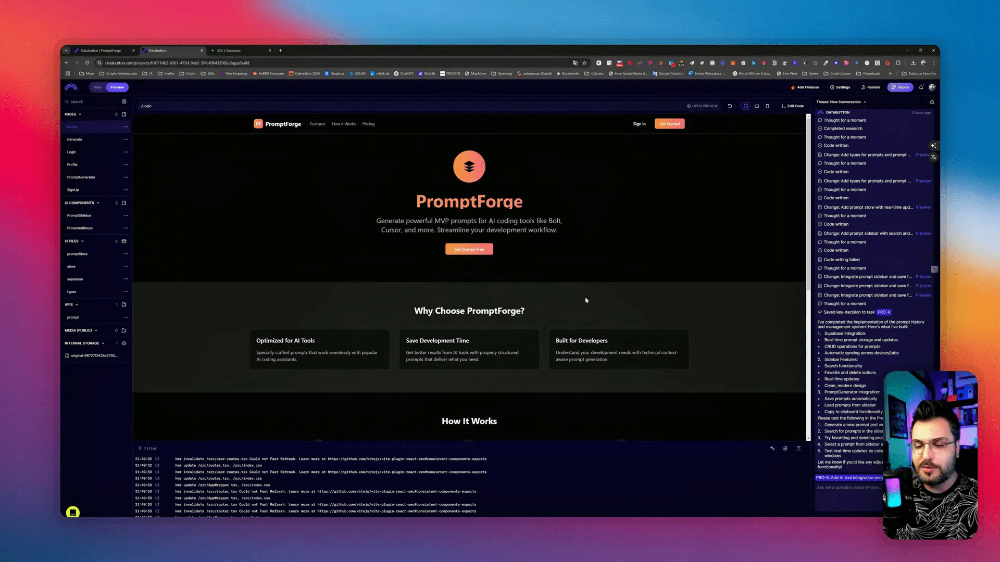
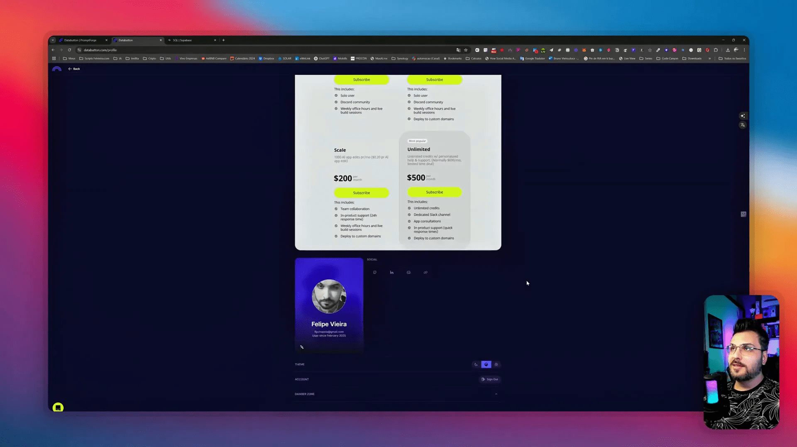

Neste guia, vamos explorar como a inteligência artificial pode revolucionar o desenvolvimento frontend e design, utilizando ferramentas inovadoras como o Data Button. Se você é um criativo sem experiência em programação ou um desenvolvedor buscando agilidade, este tutorial é para você.
Sumário
- Passo 1: Introdução ao Data Button 🚀
- Passo 2: Interação com o Público 🎤
- Passo 3: Cadastro e Planos 📝
- Passo 4: Configurações Iniciais ⚙️
- Passo 5: Criação do Aplicativo 🛠️
- Passo 6: Análise de Erros 🔍
- Passo 7: Considerações Finais 🏁
- Passo 8: Recomendações Finais 💡
- FAQ ❓
Passo 1: Introdução ao Data Button 🚀
O Data Button é uma ferramenta que permite a criação de aplicativos de forma intuitiva e acessível. Com ele, até mesmo quem não tem experiência em programação pode desenvolver um produto do zero, focando na parte visual e na experiência do usuário. É ideal para designers e criativos que desejam centralizar todo o processo de desenvolvimento sem se preocupar com detalhes técnicos complexos.
Uma das grandes vantagens do Data Button é que ele guia o usuário durante todo o processo. Ao invés de exigir que você tenha conhecimentos profundos em programação, a ferramenta solicita as informações necessárias para a criação do aplicativo, tornando o processo mais fluido e menos estressante.

Passo 2: Interação com o Público 🎤
Interagir com o público é fundamental para o sucesso do seu aplicativo. O Data Button não só facilita a criação, mas também permite que você colete feedback de seus usuários. Isso é crucial para entender como eles estão utilizando seu aplicativo e quais melhorias podem ser feitas.
Ao desenvolver, considere a experiência do usuário. Faça perguntas, colete dados e use as respostas para ajustar e aprimorar seu aplicativo. Isso não apenas aumenta a satisfação do usuário, mas também melhora a retenção.
- Feedback contínuo: Utilize ferramentas de feedback para entender o que os usuários pensam do seu aplicativo.
- Testes de usabilidade: Realize testes com usuários reais para identificar pontos de melhoria.
- Atualizações regulares: Mantenha seu aplicativo atualizado com base nas sugestões e necessidades dos usuários.

Passo 3: Cadastro e Planos 📝
O cadastro no Data Button é simples e rápido. Ao se inscrever, você terá acesso a diferentes planos que se adaptam às suas necessidades. O plano inicial custa apenas vinte dólares e oferece setenta créditos, permitindo que você comece a criar seus aplicativos sem grandes investimentos.
Os créditos são fundamentais, pois cada etapa do desenvolvimento consome uma quantidade específica. Certifique-se de monitorar seu uso para não ficar sem créditos durante o processo. Abaixo, detalhamos os principais planos disponíveis:
- Plano Básico: 20 dólares, 70 créditos.
- Plano Intermediário: 40 dólares, 150 créditos.
- Plano Avançado: 80 dólares, 300 créditos.

Passo 4: Configurações Iniciais ⚙️
Após se cadastrar, é hora de configurar seu aplicativo. O Data Button oferece uma interface amigável que facilita a personalização desde o início. Você pode definir o nome do aplicativo, uma descrição breve e até mesmo escolher elementos de design que se alinhem à sua visão.
Além disso, você pode configurar seu domínio, caso tenha um, e escolher as extensões necessárias para o funcionamento do seu aplicativo. Isso inclui opções de autenticação e integração com outras plataformas, como APIs.
- Nome e descrição: Personalize o nome e a descrição do seu aplicativo.
- Configuração de domínio: Se você possui um domínio, pode configurá-lo aqui.
- Extensões: Selecione as extensões necessárias para o funcionamento do seu aplicativo.

Passo 5: Criação do Aplicativo 🛠️
A criação do aplicativo no Data Button é um processo dividido em etapas. Após configurar tudo, você será guiado por um fluxo que facilita a construção do seu projeto. Cada etapa pode levar de dez a quinze minutos, dependendo da complexidade do aplicativo.
Durante a criação, o sistema gera códigos automaticamente e os ajusta conforme necessário. Isso significa que você não precisa se preocupar com erros de programação, pois o Data Button cuida disso para você. Cada fase consome créditos, então fique atento ao seu saldo!
- Etapas de criação: O aplicativo é desenvolvido em várias etapas, cada uma com seu próprio conjunto de tarefas.
- Monitoramento de créditos: Cada fase consome créditos, portanto, gerencie-os com sabedoria.
- Feedback em tempo real: O sistema atualiza as informações conforme você avança, permitindo ajustes instantâneos.

Passo 6: Análise de Erros 🔍
A análise de erros é uma etapa crucial no desenvolvimento de qualquer aplicativo, especialmente quando se utiliza ferramentas que automatizam parte do processo. É importante estar ciente de que erros podem ocorrer e, muitas vezes, eles podem consumir créditos durante a correção.
Ao longo do processo de desenvolvimento com a ferramenta, você pode se deparar com mensagens de erro que podem não ser claras. Aqui estão algumas dicas para lidar com esses erros:
- Documentação: Sempre consulte a documentação da ferramenta. Ela pode oferecer soluções para problemas comuns.
- Logs de Erro: Analise os logs de erro disponíveis. Eles podem fornecer insights sobre o que deu errado.
- Comunidade: Participe de fóruns e comunidades online. Muitas vezes, outros usuários já enfrentaram problemas semelhantes.
- Teste Iterativo: Realize testes de forma iterativa. Isso ajuda a identificar a origem do erro de maneira mais rápida.

Passo 7: Considerações Finais 🏁
Ao final do processo de desenvolvimento, é fundamental refletir sobre a experiência. A utilização de inteligência artificial no desenvolvimento frontend com design ai é uma inovação que, se bem aplicada, pode trazer resultados surpreendentes.
Considere os pontos positivos e negativos que você encontrou ao longo do caminho. O que funcionou bem? O que poderia ser melhorado? Essas reflexões são essenciais para aprimorar suas habilidades e o uso da ferramenta.
- Eficiência: A ferramenta pode acelerar o desenvolvimento, mas é preciso entender suas limitações.
- Custo: Esteja ciente de como os créditos são consumidos e planeje seu uso para evitar surpresas.
- Aprendizado: Cada erro é uma oportunidade de aprendizado. Use-os a seu favor para se tornar um desenvolvedor melhor.
Passo 8: Recomendações Finais 💡
Para quem está começando, minhas recomendações são simples, mas eficazes. A inteligência artificial no desenvolvimento frontend é uma área em crescimento e cheia de oportunidades. Aqui estão algumas dicas para maximizar seu aprendizado e eficiência:
- Experimente: Não tenha medo de explorar. Crie projetos pequenos para testar suas habilidades.
- Mentoria: Se possível, busque um mentor que possa guiar você nas primeiras etapas do aprendizado.
- Atualizações: Mantenha-se atualizado sobre novas funcionalidades da ferramenta. O mundo da tecnologia é dinâmico e evolui rapidamente.
- Integração: Tente integrar a ferramenta com outras plataformas que você já conhece. Essa prática pode enriquecer seu conhecimento e facilitar o desenvolvimento.

FAQ ❓
1. O que é o Data Button?
O Data Button é uma ferramenta que permite a criação de aplicativos de forma intuitiva e acessível, focando na experiência do usuário e no design.
2. Como posso corrigir erros que consomem créditos?
É importante analisar os logs de erro e consultar a documentação. Além disso, participar de comunidades pode ajudar a encontrar soluções rápidas.
3. Vale a pena investir na ferramenta?
Para quem está começando e não possui muito conhecimento técnico, a ferramenta pode ser uma excelente opção. Ela oferece um bom equilíbrio entre custo e funcionalidade.
4. Como posso melhorar minha experiência com a ferramenta?
Experimente criar projetos menores, busque mentoria e mantenha-se atualizado sobre novas funcionalidades. Isso pode aumentar sua eficiência e aprendizado.
5. A inteligência artificial pode substituir desenvolvedores?
A inteligência artificial é uma aliada, mas não substitui a criatividade e a visão de um desenvolvedor. Ela pode automatizar tarefas, mas a supervisão humana é essencial.

Veja mais detalhes no vídeo Data Button humilhou o Bolt? A solução ideal para quem quer criar aplicativos sem complicações #bolt.